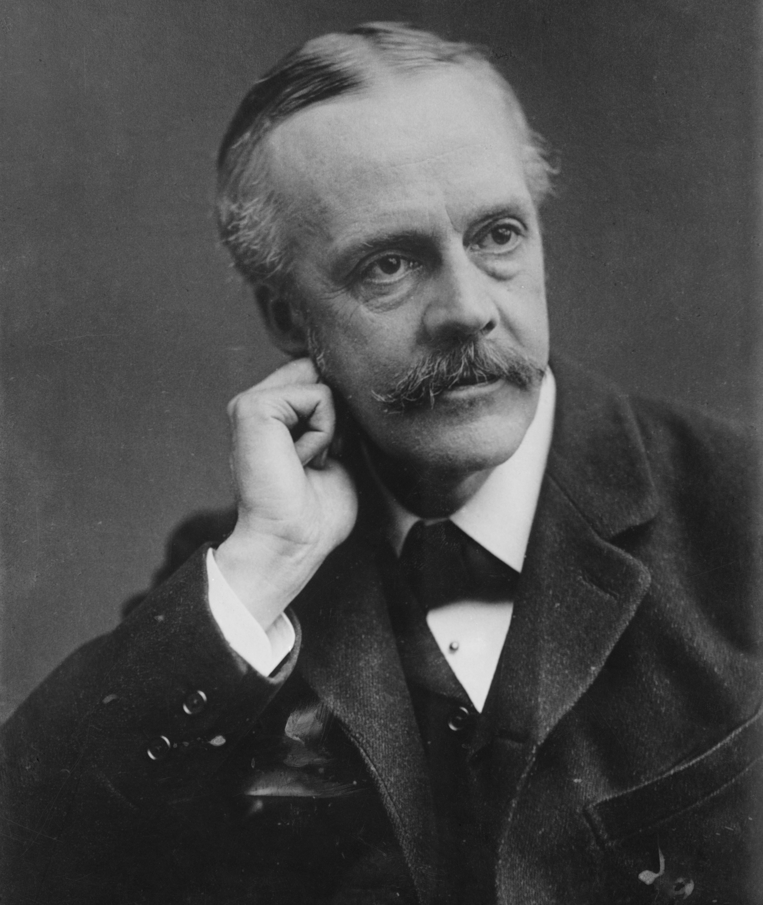

Selamat datang di website portfolio saya. Saya mahasiswa Sistem Informasi yang sedang belajar coding, desain, dan branding kreatif.
Saya berasal dari Sungai Pakning, Riau, dan saat ini menempuh pendidikan di Universitas Internasional Batam (UIB). Minat saya meliputi coding, desain logo, branding kopi, dan pembuatan poster visual dengan AI.
Email: wicinlol@gmail.com
WhatsApp: 082172196668
Instagram: @putrawijaya